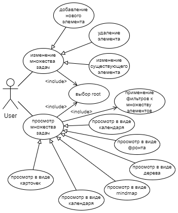
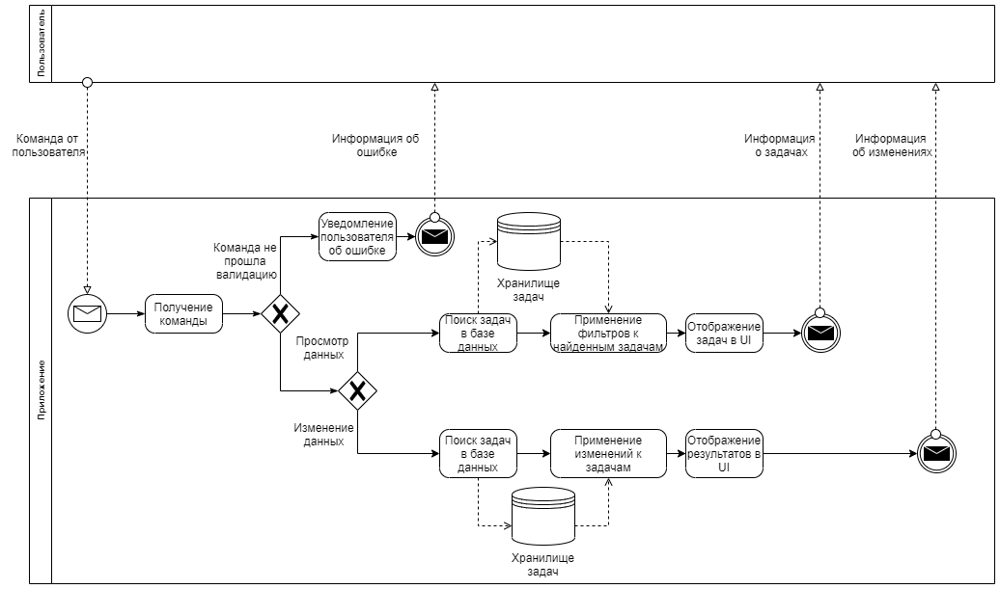
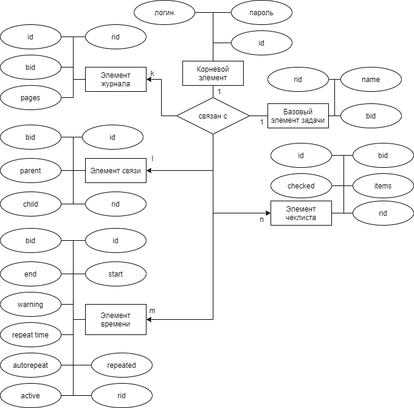
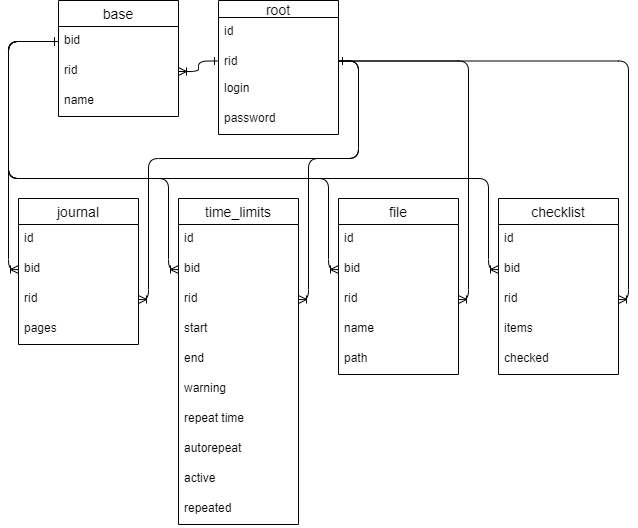
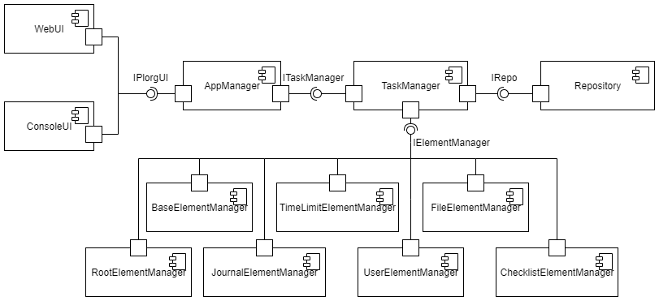
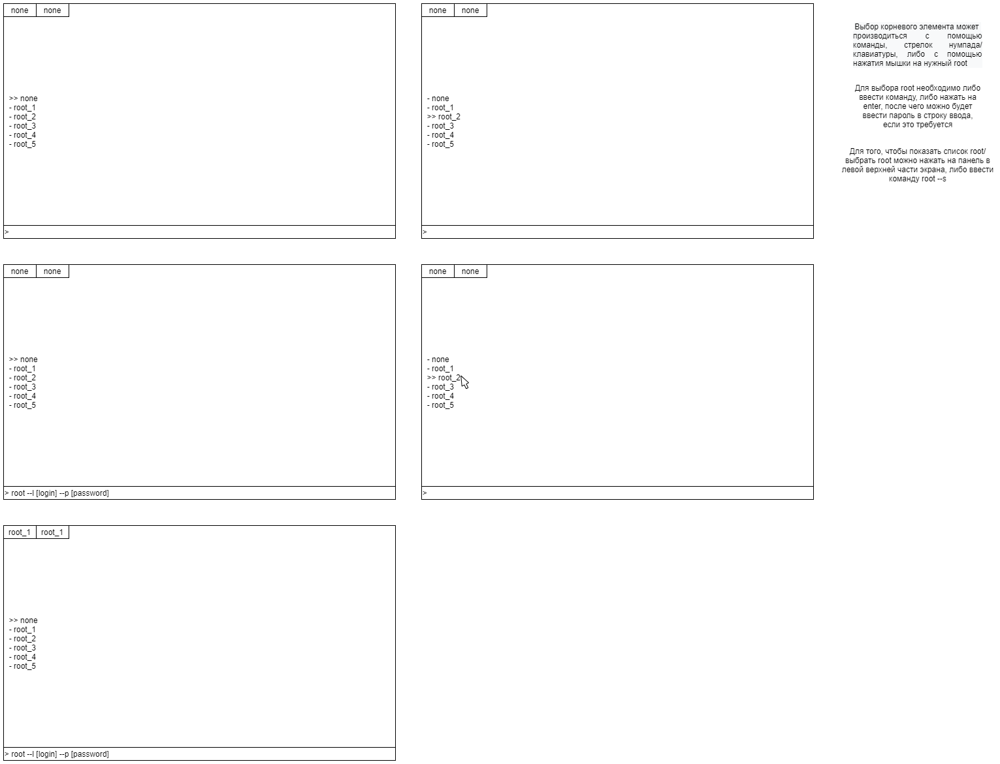
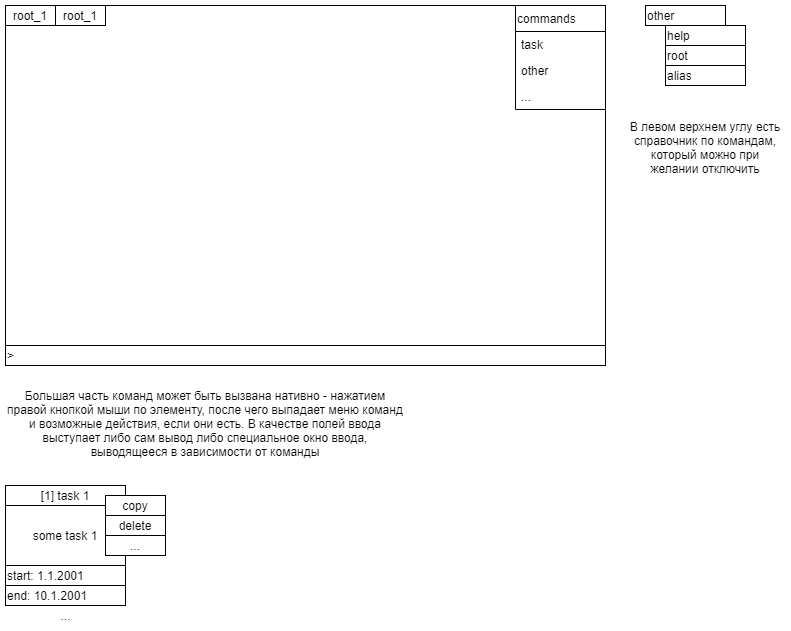
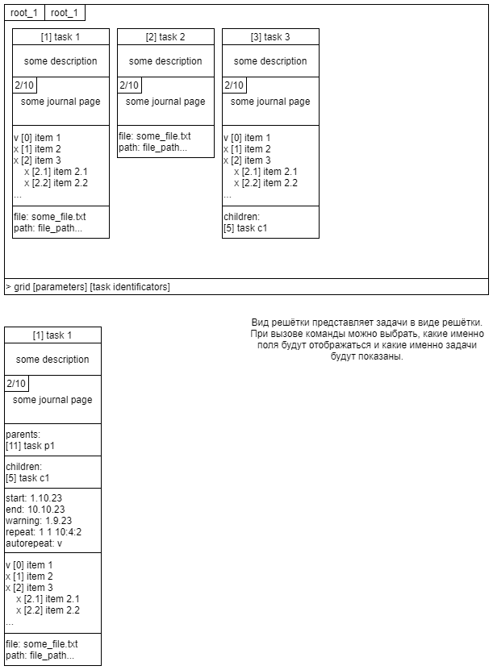
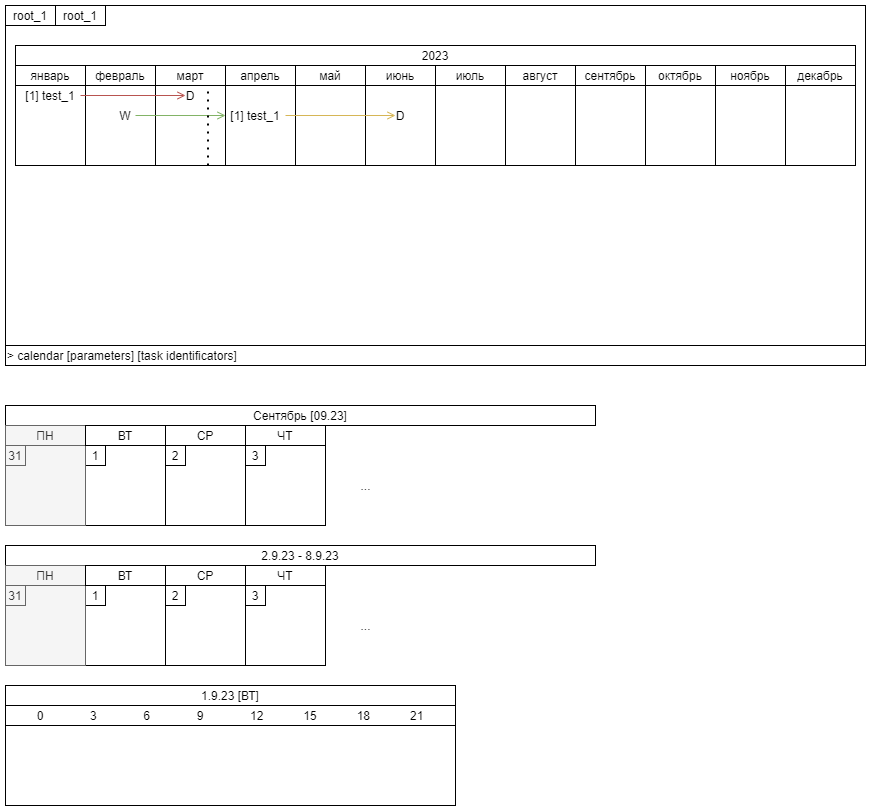
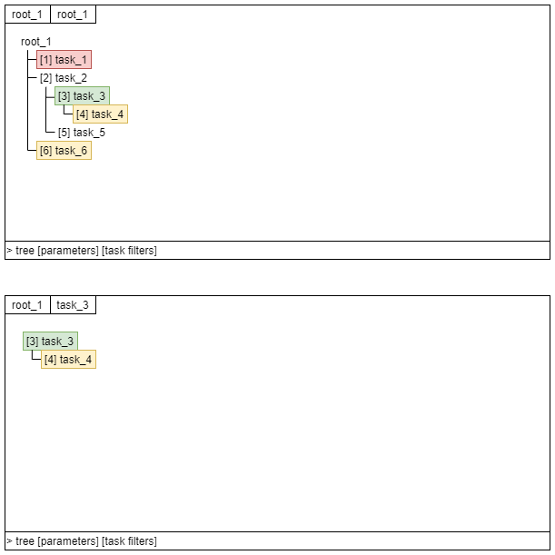

Цель работы
Целью проекта является создание приложения, предоставляющее набор инструментом для работы над множеством задач планирования.
Функциональные требования
- Реализация набора команд для работы с задачами
- create - команда для создания задач
- update - команда для обновления задач
- delete - команда для удаления задач
- Реализация набора технических команд для расширения функционала и облегчения работы над задачами
- root - сменить корневую задачу
- alias - позволяет менять набор кастомных команд, создающихся пользователем на основе существующих команд
- copy - создаёт новую задачу на основе уже существующих
- delay - сдвигает временные рамки задач на заданную величину
- actualize - подгоняет повторяющиеся задачи под текующее время
- help - выводит информацию о командах
- Реализация набора команд, позволяющих различными способами визуально представлять описаное пользователем множество задач
- grid - вывод задач в виде таблицы/решётки
- calendar - вывод задач на календаре
- tree - вывод задач в виде дерева
Все перечисленные выше команды реализуются как через интерфейс командной строки, так и через визуальный интерфейс.
Описание системы
Всего в системе существует 7 сущностей:
- root элемент - корневой элемент, определяет отношение задач к какой-то одной теме. Может иметь пароль для того, чтобы ограничивать доступ к получению задач.
- базовый элемент - является "указателем" на задачу, содержит базовую информацию и идентификатор, по которому можно найти остальные элементы, которые с ней связаны
- элемент чеклиста - содержит чеклист, связанный с задачей
- элемент журнала - содержит журнал (набор текстовых страниц), связанных с задачей
- элемент связи - содержит информацию о связи задачи с другими задачами из группы и её характере
- элемент времени - содержит информацию о временных ограничениях для данной задачи
Каждая сущность описывает конкретный элемент данных, связанный с задачей.
У каждого элемента, не являющегося root или базовым элементом есть поля rootid и bid, соответственно определяющие связь элемента с root и базовым элементом задачи.
Use case

BPMN

ER-диаграмма сущностей

Диаграмма БД

Компонентная диаграмма системы

Эскизы UI




